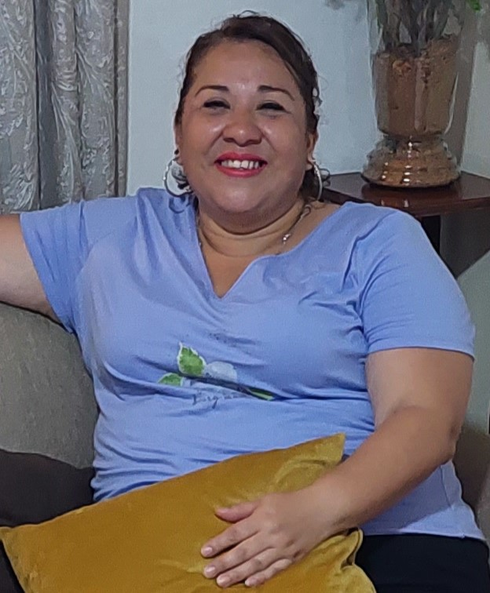
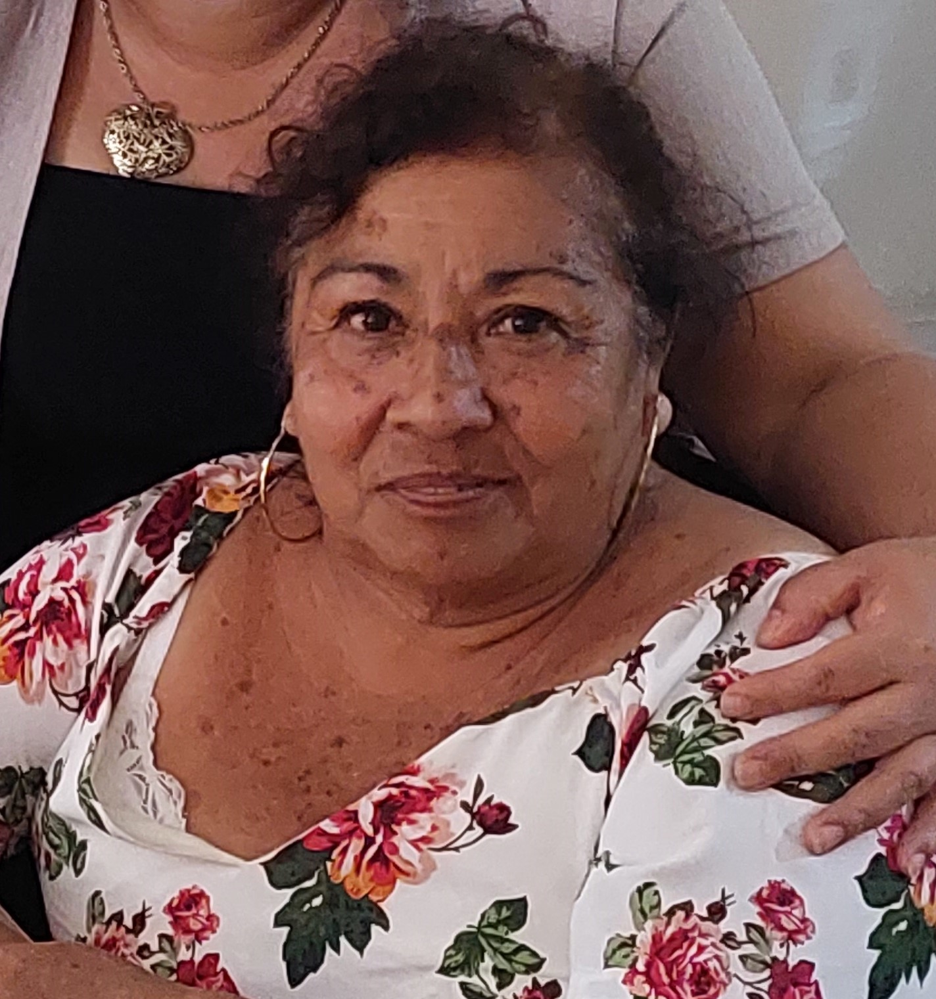

Mi mamá
 El nombre de mi mamá es Ruth García Ávida, ella nació un 12 de Mayo de 1977, actualmente tiene 46 y se dedica a trabajar en el Poder Judicial del Estado de Veracruz en el área familiar. Le gusta cocinar y los eventos sociales, es muy buena hablando con la gente, también es una amante de las flores. Ella es hija de mi abuela Elia María y de mi difunto abuelo Felipe, tiene un hermano menor, mi tío Josué, a quién no estamos a ver mucho puesto vive en otro estado.
Sus color favorito definitivamente en el rojo, casi todas las cosas que tiene y adquiere las busca de ese color. No es fanática de mirar televisión ni series, ella prefiere estar en la calle o en el trabajo, convivir con muchas personas, de hecho si se queda sedentaria un tiempo igual no le gusta, porque es hiperactiva en verdad.
Mi papá
El nombre de mi papá es Manual Juárez López, nació un 01 de Enero de 1971, actualmente tiene 52 años de edad y se dedica de igual forma al mundo de las leyes y abogacía, él litiga casos. Es una persona responsable, le gusta la redacción y es muy bueno haciendo escritos. Él y mi mamá se divorciaron hace 7 años, sin embargo seguimos siempre comviviendo juntos y se llevan bastante bien, pero por lo mismo no vivimos con él. Le gusta mucho ver series y películas, sus favoritas son las de acción, aunque siempre que se estrena algo de terror igual me acompaña, casi siempre que lo vemos terminamos viendo una nueva película o serie. También le gustan las fiestas y convivir con gente, sin embargo eso es cuando se siente más en confianza, puesto que sí es algo retraído la mayoría del tiempo.
Mi hermano
El nombre de mi hermano es Imanol Juárez García, nació un 05 de Abril de 2005, tiene 18 años actualmente y es un chico muy alegre. Este semestre acaba de entrar a la universidad y piensa dedicarse a la Administración, le gustan los números y salir, disfruta siempre convivir con sus amigos y conocer nuevas personas. Es un chico muy servicial y amable, cada que ve a alguien que necesita ayuda sin pensarlo se lanza a la acción. También le gusta el liderazgo al parecer, puesto que desde que está en prepa lo han elegido para jefe de grupo, inclusive ahorita también que entró a la universidad ese cargo lo persigue. A veces es un poco retraído en cuanto a ir a lugares que no conoce puesto que a pesar de que le gusta mucho la convivencia no es fanático de conocer lugares diferentes. Es un muchacho muy responsable y se esfuerza mucho para lograr sus metas.
Mi abuela
Ella es mi abuela Elia María Ávida Balderas, actualmente tiene 68 años de edad, ella cumple años el 25 de septiembre de 1955, ella es originaria de Poza Rica, Veracruz, allá es donde creció gran parte de su vida y donde conoció a mi abuelo, también donde nació mi madre y mi tío. Es una persona un poco rígida, a veces es muy cándida cuando se siente en confianza con nosotros, sin embargo no le gusta convivir con demasiadas personas, es más de quedarse en casa y cocinar y tejer. Lo que más le gusta es cocinar, su forma de hacerlo es como cocinan en sus tierras natales, y todos en Veracruz saben que la gastronomía de allá es muy rica. Siempre nos prepara los platillos que se nos antojan. Su otra pasión es tejer, siempre haciendo blusas o manteles o centros de mesa para todo el mundo, igual lo vende la mayoría de ves.
Mi prima
Ella es mi prima Dafne Paola, actualmente tiene 22 años, su cumpleaños es el 28 de Agosto del 2001 y la relación que tengo con ella es muy cercana y de confianza. Fuimos a la escuela primaria, secundaria juntas y hasta en la universidad a veces nos topamos, pues nuestras carreras están en la misma área. Ella se dedica a la fotografía, es lo que estudia, desde pequeña siempre mostró un interés enorme en este arte, cuando comenzó y tuvo su primera cámara recuerdo que la ayudé muchas veces en sus primeras sesiones de fotos y a experimentar con ese artefacto que yo no tenía idea de cómo usar pero me enseñó y también me terminó llamando la atención. También podría decir que es una persona muy amigable y que le encanta estar rodeada de personas, su cantante favorita en Taylor Swift igual que yo, inclusive fuimos juntas al concierto.
Mi novio
A pesar de no ser de mi familia como tal aún, para mi cuenta como un ser muy importante de ella. Él es mi novio Ian Adair, tiene 23 años y su cumpleaños es el 18 de Junio del 2000. Llevamos juntos 1 año y 5 meses, sin embargo por la forma en la que conectamos y lo que hemos vivido hasta ahora se siente como si lleváramos el doble de tiempo. Estudió Arte Digital y Animación, ya es graduado y hasta tiene especialidad. Es un chico extremadamente trabajador y estudioso, desde que lo conozco le había echado muchas ganas para sacar con buenas calificaciones su especialidad, ahora que ya terminó eso se dedica a ser profesor de diversas materias en una escuela bachiller especialidad en el área de artes, le gusta mucho su trabajo actual, es muy comprensivo con los chicos, le gusta guiarlos a desenvolverse mejor en el área y a formentarles el ponerle ganas a lo que hacen. Es un chico muy detallista también y disfruta ver películas y series conmigo, además de ser una amante de los perritos y gatos.